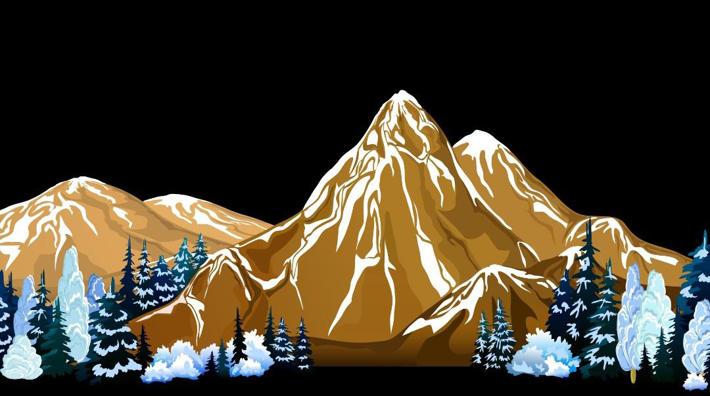

Гірські системи Землі
Гірська система — сукупність гірських пасм, плоскогір'їв, міжгірських западин і долин. Як правило, це гори, що сформувалися протягом однієї геотектонічної епохи і мають просторову і морфологічну єдність[1].
Іноді сукупність гірських систем, сформованих в одну геотектонічну епоху, які проте мають різну структуру і зовнішній вигляд, можуть утворювати складнішу структуру, що має назву гірська країна (Середньоазіатські гори, гори Південного Сибіру та ін.).
Гори — дiлянки земної поверхнi, що високо пiдiймаються над прилеглими рiвнинами та мають сильно розчленований рельєф.
Гiрська країна — велика територiя з гiрськими рельєфами й гострими вершинами.
Гiрський хребет — лiнiйно витягнута форма рельєфу, обмежена схилами, що розходяться в протилежнi боки.
Гребiнь — найвища частина гiрського хребта. Перевали — зниженi мiсця гiрських хребтiв, якi сполучають долини, що лежать з обох бокiв вiд хребта.
Горам у тектонічній структурі відповідають області складчастості.
За висотою гори поділяють на:
низькі (до 1000 м): Урал, Кримські гори
середні (1000—2000 м): Карпати, Скандинавські гори
високі (понад 2000 м): Гімалаї, Анди.
Висота гір залежить від виду гірських порід, які їх складають, і швидкості піднімання (зростання гір). Так гори, складені нестійкими породами (піщаник, вапняк та інші), швидко руйнуються і, незважаючи та їхній «молодий вік», мають окремі вершини і є відносно невисокими. Наприклад, Карпати – це молоді гори альпійської складчастості, але за висотою вони середні.
За віком гори поділяються на:
молоді (процес горотворення ще не завершений, молодші за 60 млн. років): Альпи, Памір
молодші за 60 млн років): Альпи, Памір
старі (вік утворення перевищує 60 млн. років): Урал, Скандинавські гори
| Материк |
 |
Вершина |
Висота, м |
| Євразія |
Гімалаї |
Джомолуніма |
8848 |
| Південна Америка |
Анди |
Аконкагуа |
6960 |
| Північна Америка |
Кордилыри |
Мак-Кінлі |
6194 |
| Африка |
Східно-Африканське плоскогір'я |
Кіліманджаро |
5895 |
| Австралія |
Австрійськи Альпи |
Косцюшио |
2230 |
| Антарктида |
Сентінез |
Вімсон |
5140 |
Таблиця 1. Гірські системи материків світу
Пропунуємо переглянути більше інформації про гори
читати далі
більше інформації